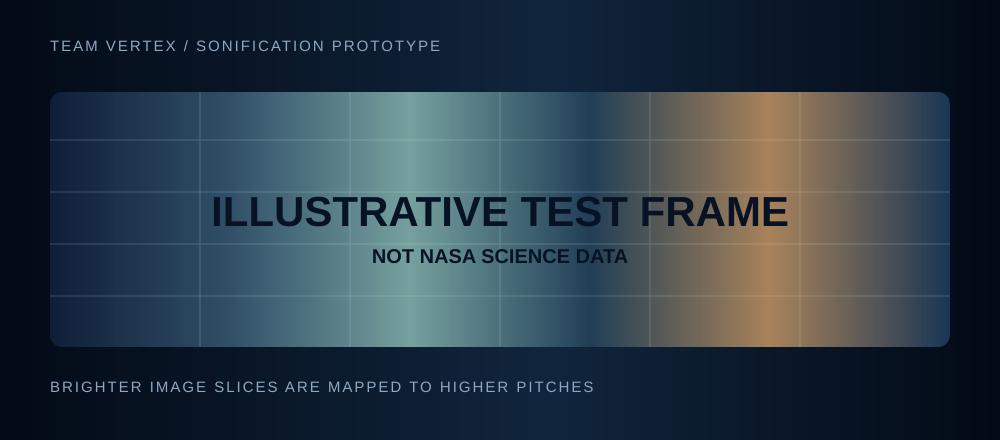

02 / VISUAL FRAME

VISUAL → AUDIO
Explore visual patterns in NASA Earth Information Center imagery through real-time, data-driven sound. Each change you hear corresponds to a measured feature of the selected visual frame.
The built-in frame is illustrative, NOT a NASA visualization. Download the authentic NASA image to activate scientific-source mode.

READY TO LISTEN
Our first prototype samples average visible-pixel brightness in vertical slices of the image. The brightness is normalized for the current image and mapped to an audible frequency. Brighter slices produce higher tones.
Scientific honesty: This is an image-feature sonification, not a direct measurement of radiance, climate change, population, or light pollution.
The intended NASA input is Change in Night Lights between 2012 and 2023 — EIC Version, created by NASA's Scientific Visualization Studio using Black Marble/VIIRS night-light observations.
View NASA visualization & source credits ↗